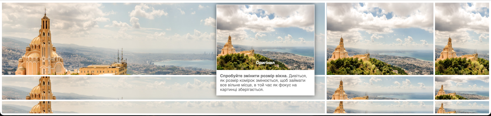
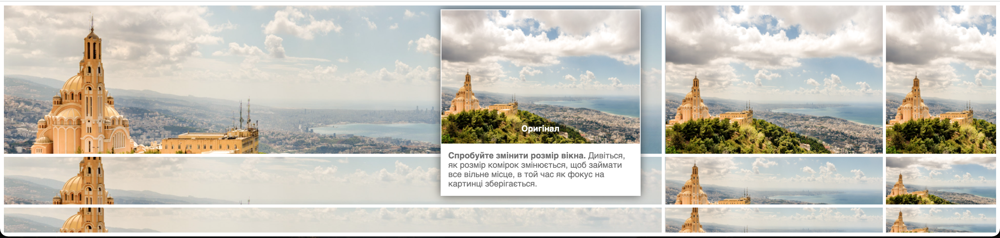

Focuspoint - плагін для динамічного обрізання зображень, щоб заповнити доступний простір без вирізання об'єкта зображення.
Vide - плагін jQuery для простого додавання відеофайлів до веб-сторінки.
 
